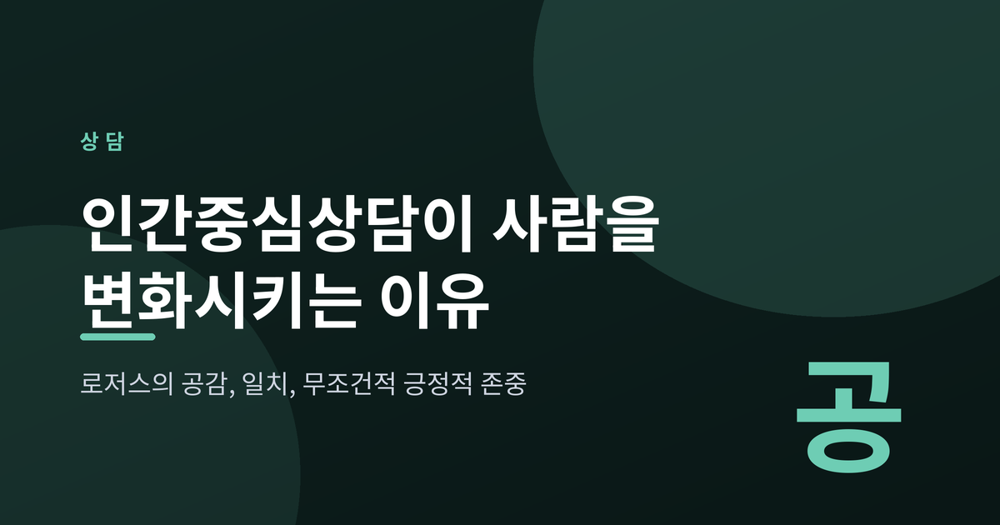
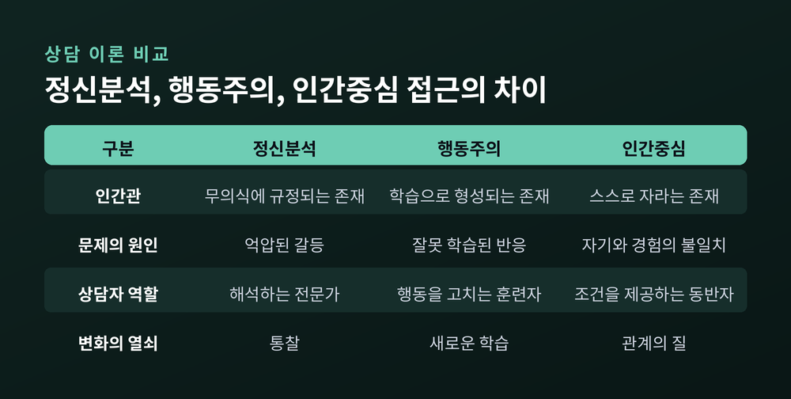
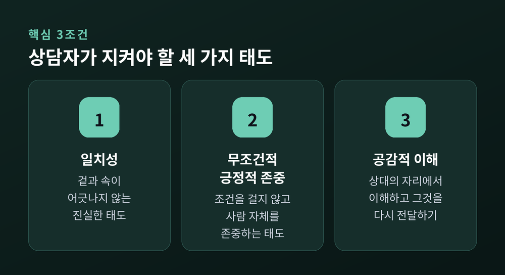
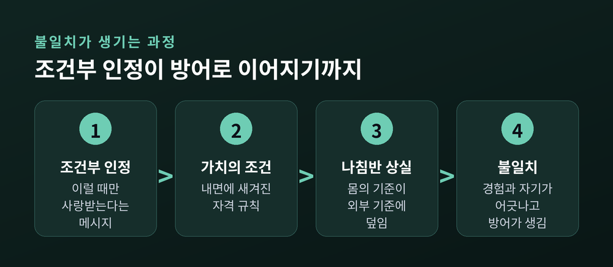
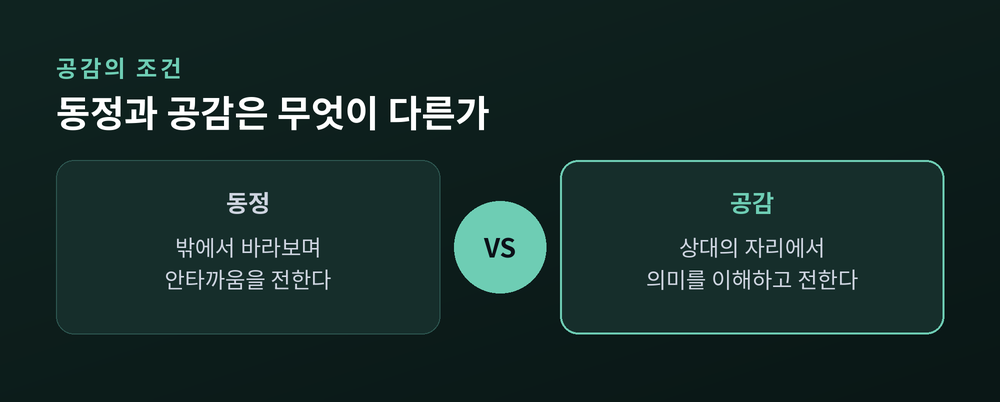
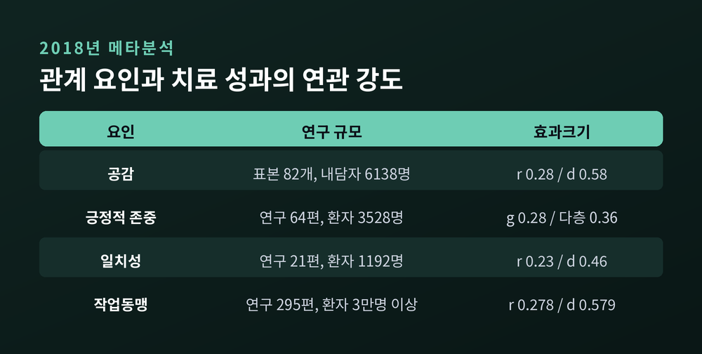

이번 글에서는 칼 로저스의 인간중심상담을 정리해 보겠습니다. 상담을 배우지 않은 분들에게도 공감과 경청이라는 말은 익숙합니다. 다만 그 말들이 왜 사람을 실제로 바꾸는지까지 설명되는 경우는 드뭅니다. 그 연결 고리를 원논문과 최근 연구를 근거로 따라가 보려 합니다.
칼 랜섬 로저스는 1902년에 태어나 1987년에 세상을 떠난 미국의 심리학자입니다.
그가 비지시적 상담을 내놓은 시점은 1940년대 초였습니다. 1942년의 『Counseling and Psychotherapy』에서 접근을 처음 공식화했고, 1951년의 『Client-Centered Therapy』에서 체계를 갖췄습니다. 이 접근은 비지시적 치료에서 내담자중심 치료로, 다시 인간중심 접근으로 이름을 바꾸며 자랐습니다.
당시 심리학의 지형은 둘로 나뉘어 있었습니다. 무의식이 사람을 결정한다고 본 정신분석, 자극과 반응의 학습이 사람을 결정한다고 본 행동주의입니다. 에이브러햄 매슬로는 로저스의 흐름을 인본주의, 곧 '제3세력'이라 불렀습니다.
로저스의 출발점은 단순했습니다. 내담자를 고쳐야 할 고장 난 기계가 아니라, 본질적으로 건강한 존재로 대하는 것입니다. 판단하지 않는 따뜻한 환경이 마련되면 사람은 스스로 자기를 알아가고 받아들인다고 보았습니다.

로저스는 1957년 『Journal of Consulting Psychology』에 「치료적 성격 변화의 필요충분조건」을 발표했습니다.
여기서 그는 건설적인 성격 변화가 일어나려면 여섯 가지 조건이 존재하고 일정 기간 지속되어야 한다고 적었습니다.
흔히 '핵심 3조건'이라 부르는 일치성, 무조건적 긍정적 존중, 공감적 이해는 이 여섯 가지 중 상담자의 태도에 해당하는 부분입니다. 조건이 세 개라고 알려진 경우가 많습니다만, 원논문의 조건은 여섯 개입니다.
눈여겨볼 대목은 두 번째 조건입니다. 상담의 출발점을 증상이 아니라 '불일치'로 잡았다는 뜻이기 때문입니다.

로저스는 모든 유기체에 스스로를 유지하고 향상시키려는 실현경향성이 있다고 보았습니다.
이 경향성을 안내하는 나침반이 유기체적 가치화 과정입니다. 아이는 배고프면 먹는 것이 좋게 느껴지고, 지나치게 먹으면 불편하게 느껴집니다. 누가 알려주지 않아도 몸이 스스로 평가합니다.
문제는 타인의 인정이 조건부로 주어질 때 생깁니다. “이럴 때만 너는 사랑받을 만하다”는 메시지가 반복되면, 사람은 가치의 조건을 내면에 새깁니다. 내가 가치 있으려면 무엇을 해야 하는지에 관한 규칙입니다.
그 규칙이 쌓일수록 내부의 나침반은 외부 기준에 덮입니다. 자기개념은 타인의 평가로 다시 지어집니다.
그리고 어느 날 실제 경험이 그 자기개념과 맞지 않습니다. 이것이 불일치입니다. 불일치는 취약함과 불안으로 이어지고, 자기를 위협하는 경험은 왜곡되거나 부인됩니다. 방어는 여기서 태어납니다.
정리하자면 이렇습니다. 사람을 힘들게 하는 것은 감정 자체가 아니라, 그 감정을 느껴서는 안 된다고 배운 기억입니다.

미국심리학회 사전은 공감을 자기 자신의 준거틀이 아니라 상대의 준거틀에서 이해하는 것, 혹은 상대의 감정과 지각과 사고를 대리적으로 경험하는 것으로 정의합니다. 동정은 타인의 걱정이나 감정을 함께 나누고 반응하는 능력입니다.
상담 맥락에서 차이는 더 또렷해집니다. 공감은 내담자 경험의 감정과 의미를 붙들어 수용적으로 되돌려주는 일입니다. 동정은 그 사람의 고통스러운 사건에 대한 안타까움의 표현입니다.
일반화된 예를 하나 들어보겠습니다. 누군가 “회사를 그만두고 싶은데 아무에게도 말을 못 하겠다”고 했다고 해봅시다.
동정은 이렇게 반응합니다. “많이 힘드시겠어요. 저도 안타깝네요.”
동조는 이렇게 반응합니다. “그만두세요. 그런 회사는 다닐 필요 없습니다.”
공감은 방향이 다릅니다. “말을 꺼내는 순간 뭔가 돌이킬 수 없게 될 것 같아서, 그 문장을 계속 삼키고 계셨던 거군요.”
앞의 두 반응은 듣는 사람의 자리에서 나옵니다. 세 번째는 말하는 사람의 자리에서 나옵니다.
중요한 단서가 하나 더 있습니다. 공감은 상대의 감정 안으로 들어가되 자기 자신의 관점과 자기감을 놓지 않는 '마치 ~인 듯'의 상태를 유지합니다. 함께 무너지면 그것은 공감이 아니라 압도입니다.
로저스는 1975년 『The Counseling Psychologist』에 실은 글에서 공감을 “다른 사람과 함께 있는 매우 특별한 방식”이라 표현했습니다. 동시에 관계 안에서 온전히 꽃핀 형태로는 좀처럼 보이지 않는다고 덧붙였습니다.

인간중심상담 하면 흔히 떠올리는 장면이 있습니다. 상담자가 내담자의 말을 되짚어 주는 '반영'입니다.
로저스 본인은 이 대목에서 오해를 많이 받았습니다. 반영이 상대의 말을 기계적으로 되풀이하는 훈련으로 변질되자, 그는 이를 나무토막 같은 흉내내기라고 부르며 못마땅해했습니다. 한동안 공감적 경청에 대해 거의 말을 아꼈다는 이야기도 전해집니다.
로저스와 파슨이 「Active Listening」에서 남긴 문장이 이 지점을 정확히 짚습니다. 앵무새처럼 말을 따라 하는 것은 이해했음을 증명하지 못하고, 단어를 들었다는 것만 증명한다는 것입니다.
감정의 반영은 기법이 아니라 수용과 이해라는 태도를 구현하는 하나의 방법이며, 상담자의 인격에 뿌리를 둡니다.
결국 관건은 일치성입니다. 속으로는 지루한데 겉으로 관심 있는 척하면, 상대는 그 어긋남을 직관적으로 알아챕니다.
로저스의 주장은 오래 논쟁거리였습니다. 관계만으로 사람이 바뀐다는 말이 너무 낭만적이라는 비판이 따라다녔습니다.
예전에는 임상적 인상에 기대 다투었습니다. 지금은 대규모 메타분석 자료가 쌓였습니다.
효과크기 자체는 작음에서 중간 수준입니다. 그러나 300편 가까운 연구가 같은 방향을 가리킨다는 사실이 더 중요합니다.
치료 전체의 성과를 보면 그림이 또 달라집니다. 엘리엇 연구진이 2013년 핸드북에 정리한 자료에 따르면, 인본주의·체험적 치료 191편 14,235명에서 사전-사후 효과크기는 0.93이었습니다. 그중 22편에서는 인지행동치료와 변화량이 동등했습니다. 다만 사전-사후 효과크기와 상관계수는 성격이 다른 지표이므로 나란히 놓고 비교해서는 안 됩니다.
관계 요인은 제도 안으로도 들어왔습니다. 노크로스와 램버트가 엮은 『Psychotherapy Relationships That Work』 제3판에서는 전문가 합의에 따라 관계 요인 아홉 개가 '명백히 효과적', 일곱 개가 '아마도 효과적'으로 분류되었습니다.

좋은 점만 적으면 균형이 무너집니다. 비판도 함께 보겠습니다.
첫째, 문화적 편향입니다. 로저스의 자기실현 개념은 개인의 자율성과 독립을 강조합니다. 이는 독립적 자기를 중시하는 서구 개인주의의 강조점을 반영하며, 비서구 집단주의 문화에 널리 퍼진 상호의존적 자기를 충분히 담지 못한다는 지적을 받습니다. 동아시아 관점에서 이 접근의 적용 가능성을 검토한 학술 논문도 나와 있습니다.
둘째, 심각한 정신병리입니다. 모든 사람에게 자기실현을 향한 내재적 추동이 있다는 가정은 정신증이나 심한 성격장애를 겪는 분들에게는 그대로 적용하기 어렵습니다. 현실 지각이 달라지는 상태나 유의한 인지 손상이 동반된 경우, 이 접근만으로는 효과가 낮다는 연구가 있습니다.
셋째, '충분조건' 논쟁입니다. 원리가 지나치게 모호하다는 비판, 통제된 연구가 부족하다는 지적이 있습니다. 나아가 효과적인 부분은 이 접근의 고유한 자질이 아니라 모든 좋은 치료가 공유하는 특성이라는 주장도 있습니다. 흥미롭게도 이 비판은 작업동맹 연구 결과와 맞물립니다. 관계 조건이 인간중심 접근의 전유물은 아니되, 어떤 치료에서든 작동한다는 쪽으로 읽히기 때문입니다.
넷째, 일상 관계로 옮길 때의 어려움입니다. 부모와 자녀 사이, 동료 사이에서 무조건적 긍정적 존중을 그대로 구현하기는 쉽지 않습니다. 상담은 역할과 시간과 경계가 정해진 관계이지만, 일상은 그렇지 않기 때문입니다. 게다가 앞서 본 대로 태도 없이 흉내만 낸 경청은 오히려 역효과를 냅니다.
로저스 사후 15년 동안 발표된 그와 인간중심 접근에 관한 출판물이, 그 이전 40년간의 출판물보다 많았다는 조사가 있습니다. 유럽 일부 국가에서는 주요 상담 접근 중 하나로 자리 잡아 훈련기관과 자격 인정, 보험 급여까지 갖췄습니다.
한 사람이 제시한 여섯 줄의 조건이 반세기를 건너 이만큼의 연구를 불러냈습니다.
끝으로 한 마디만 더 드리겠습니다. 인간중심상담이 알려주는 것은 기술이 아니라 순서입니다. 사람은 평가받는 자리에서는 자기를 열지 못하고, 자기를 열지 못하면 바뀔 재료조차 꺼내지 못합니다. 판단을 잠시 내려놓는 일이 먼저이고, 조언은 그다음입니다.
무조건적 긍정적 존중은 상대의 모든 행동에 동의한다는 뜻이 아닙니다. 행동과 사람을 분리해서 본다는 뜻에 가깝습니다. 이 구분만 몸에 익혀도 일상의 대화는 꽤 달라집니다.
다만 여기에는 분명한 선이 있습니다. 이 글은 일반적인 정보를 정리한 것이며, 진단이나 치료를 대신하지 않습니다. 불안이나 우울이 오래 이어지거나, 관계에서 같은 고통이 반복된다면 혼자 버티지 마시고 전문 상담자나 정신건강의학과의 도움을 받으시길 권합니다. 앞서 적었듯 심각한 어려움에는 따뜻한 관계만으로 충분하지 않은 경우가 있습니다. 전문가의 판단이 필요한 지점이 분명히 있습니다.
누군가를 바꾸는 가장 빠른 길이 무엇이냐 물으신다면, 저는 바꾸려는 마음을 잠시 내려놓는 것이라 답하겠습니다.